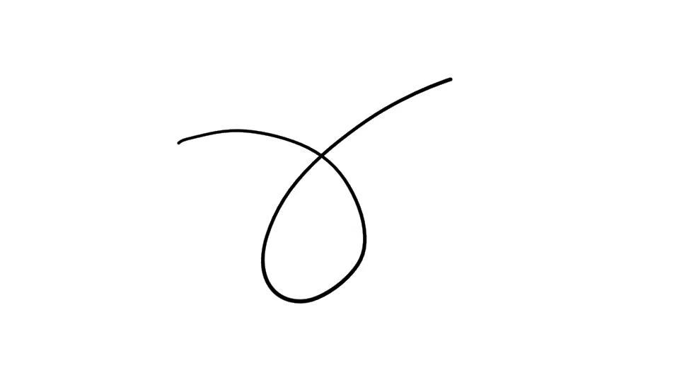
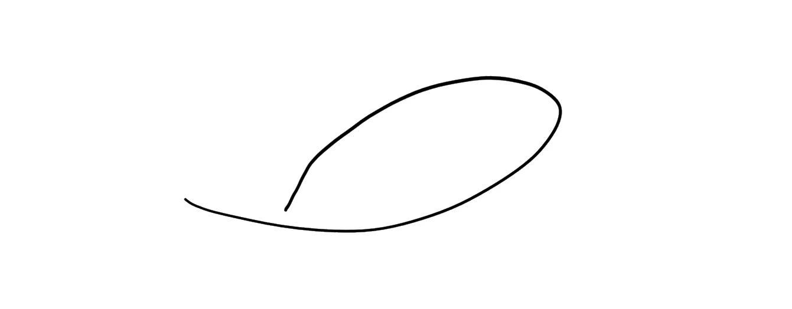

Lecture 19¶
Chapter: Global Differential Geometry
Differentiable manifolds
\(M_1 \xrightarrow{\varphi} M_2\)
between diff. mfds.（注：differentiable manifolds）
\(p \in M_1\). \(\varphi\) is diff. at \(p\) if there exist charts \(f: U \to M_1\) around \(p\), \(g: V \to M_2\) around \(\varphi(p)\) s.t. \(g^{-1} \circ \varphi \circ f\) is diff. at \(f^{-1}(p)\).
The dimension of the base, of the first, of the domain, and the dimension of the co-domain, which in principle are different.
Does this depend on the choice of the chart? If I take another chart around \(p\) and another chart around \(\varphi(p)\), the corresponding map is not differentiable? The answer is clearly no, because the change of chart is a diffeomorphism.
The curvature is essentially the derivative of the normal vector.
Now the key in our study of surfaces was to describe, out of the definition, the notion of the tangent space.
Narrative
You cannot speak about the derivative of a function with values on a set because you cannot even take the difference. So we have to give another interpretation of tangent vectors. Actually the idea is really to save the idea of velocity, but somehow we have to change the interpretation.
If \(\varphi\) is a function around \(p\), the derivative of \(\varphi\) in the \(v\)-direction
Then the point is to prove, logically, this object does not depend on \(\alpha\), but only on \(v\).
Narrative
This kind of differential operator is completely determined by \(v\) because its coefficients with respect to the partial derivatives are given exactly by the components of the vector \(v\). So knowing \(v\) and knowing this operator is the same thing. If I give the interpretation that the tangent vector is not something I draw as I'm used to but as an operator, a differential operator on functions which satisfies certain properties, then I have a hope.
Definition
\(\alpha: I \to M\) differ. \(\alpha(0)=p\).
Set \(D\). the set of functions on \(M\) with values in \(\mathbb{R}\), differ. at \(p\).
Then the tangent vector to \(\alpha\) at \(p\) is the map
注
Now it's just a notation because I don't want to be confused with the classical case. Of course, the symbol prime now has absolutely no meaning. So it's just a formal notation.
A tangent vector to \(M\) at \(p\) is the tangent vector to \(\alpha\) at \(p\) for some \(\alpha\).
\(p = f(0,\dots,0)\). A curve \(\alpha: I \to M\) and \(\varphi \in D\) are \((f^{-1} \circ \alpha)(t) = (x_1(t), \dots, x_n(t))\), \((\varphi \circ f)(q) = \varphi(x_1, \dots, x_n)\), \((x_1,\dots,x_n)=q\).
where \(\left.\frac{\partial}{\partial x_i}\right|_0\) is the tangent vector to the coordinate curve, meaning \(x_i \mapsto f(0,\dots,0,x_i,0,\dots,0)\).
Narrative
Observation: \(T_p M = T_f\)（注：\(T_f\) is nice because it's automatically a vector space. It's bad because it depends on the chart. \(T_p M\) is nice because it was chart independent, but it has no structure more than a set. But using a chart via this identification, I can put a structure of vector space.）
``\(\subseteq\)'' Done!
``\(\supseteq\)'' take \(v = \sum_{i=1}^n \lambda_i \left.\frac{\partial}{\partial x_i}\right|_0\), take \(\alpha\) s.t. in the parametrization \(f\) becomes \(\alpha = \sum_{i=1}^n \lambda_i t\)
\(\implies\) \(T_p M\) has the structure of an \(n\)-dimensional vector space.
Definition
\(M_1 \xrightarrow{\varphi} M_2\), \(p \in M_1\),
Is this definition \(\alpha\) dependent? No.
The tangent bundle:
Let \(M\) be a differentiable manifold. Define
If \(w \in T_{f_\alpha(q)} M\), \(w = \sum_i y_i^\alpha \frac{\partial}{\partial x_i^\alpha}\)
Define \(F_\alpha: U_\alpha \times \mathbb{R}^n \to TM\)
Special manifolds as submanifolds:
\(M^m, N^n\). \(\varphi: M^m \to N^n\) is called an immersion if \(d\varphi_p: T_p M \to T_{\varphi(p)} N\) is injective \(\forall p \in M\).
If in addition \(\varphi\) is a homeomorphism onto \(\varphi(M)\) with the induced topology from \(N\), then \(\varphi\) is called an embedding.
If \(M \subset N\) and the inclusion is an embedding, then \(M\) is called a submanifold of \(N\).
1) \(\alpha: \mathbb{R} \to \mathbb{R}^2\quad t \mapsto (t^2, t^3)\) is not an immersion. Because the tangent vector should be always non-zero.
2) is an immersion.

Figure: 2)

Figure: 3)
3) is an immersion without self-intersection but still not an embedding.
Example
\(M^k \subset \mathbb{R}^n\). Suppose that \(\forall p \in M^k\) \(\exists V\) neighborhood of \(p\) in \(\mathbb{R}^n\) and a map \(f: U \subset \mathbb{R}^k \to M \cap V\) s.t.
1) \(f\) is a \(C^\infty\) homeomorphism.
2) \(df_q: \mathbb{R}^k \to \mathbb{R}^n\) is injective.
Example
\(\mathbb{P}^2(\mathbb{R}) = M\)
So we can define \(g_i: U_i \to \mathbb{P}^2(\mathbb{R}),\ g_i = \pi \circ f_i^+\)
This is one moment where you have to think about the famous third property in the definition of differentiable structure. These atlases are very different so they have the same differentiable structure. If the differentiable structure is just the collection of these sets, then they are different. But the maximal cover with all those properties will be the same.
Not every two-dimensional manifold is a submanifold of \(\mathbb{R}^3\).
Is it true that any differentiable manifold can be embedded into some Euclidean space, letting the dimension free? The answer is yes.
This was historically a key question. Because really you are comparing is the new geometry with the old geometry in some sense.